고대 그리스의 병사들은 어떤 것을 먹었을까 ?
게시: 2019-01-21T00:35:55+09:00
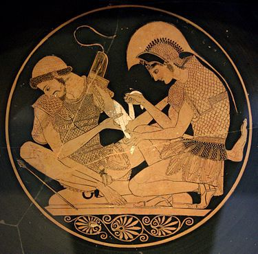
고대 그리스의 고전 일리아드와 오딧세이에는 당시 병사들이 어떤 것을 먹고 마셨는지에 대한 묘사가 매우 상세하게 되어 있습니다. 다만 이 서사시들은 우리가 흔히 생각하는 BC 3~4세기의 페르시아 전쟁이나 펠로폰네소스 전쟁 때의 이야기가 아니라 그보다 훨씬 까마득한 옛날인 BC 11세기 정도의 청동기 시대의 이야기입니다. 즉 도리아인들의 침공 이후 형성된, 우리가 흔히 알고 있는 아테네와 스파르타로 양분되는 그리스 시대보다 훨씬 이전 시대의 이야기입니다. 그래서 등장 인물들의 갑옷과 투구, 창 등이 모두 청동으로 되어 있지요. 다만 철기가 존재하지 않던 시절까지는 아니고, 철이 등장하기는 합니다. 그러나 아직 철기시대 초창기라서 당시의 철(iron)에는 탄소 함량이 너무 많아 단단하기는 하지만 깨지기 쉬운 무쇠(cast iron)만 있었던 것 같습니다. 그래서인지 일리아드에 등장하는 철은 무기가 아니라 주로 농기구나 도끼, 사슬 등에 사용하고 있는 것으로 묘사됩니다. 무기로도 쓰이기는 했는데, 정교한 검이나 창날이 아니라 큼지막한 철퇴 같은 것으로 썼나 봅니다. 가령 파트로클루스의 장례식에서 여흥으로 벌어진 스포츠 경기에서, 아킬레스가 각 경기의 우승자를 위해 내놓은 상품 중에는 다음과 같이 무쇠덩어리가 나옵니다.
다음으로 아킬레스는 에에티온(Eetion)이 던지던 커다란 쇳덩어리를 상품으로 내걸었다. 아킬레스는 에에티온을 죽인 뒤 그의 다른 소지품들과 함께 그 쇳덩어리를 빼앗아 배에 실어놓았었다. 이제 그는 다음 경기를 발표하며 참가를 유도했다. "이 경기의 승자는 5년 간 충분히 쓸 만한 양의 무쇠를 갖게 될 것이오. 이 무쇠 덩어리만 있으면 그의 농장이 아주 외딴 곳에 있다고 하더라도 쇠를 구하기 위해 쟁기꾼이나 목동을 마을로 보낼 필요가 없을 것이오."
일리아드와 오딧세이에 나오는 병사들의 식사는 주로 육류입니다. 물고기를 잡는 모습이나 굴을 따는 것에 대한 묘사가 나오는 것을 보면 생선 등의 해산물을 전혀 먹지 않았던 것 같지는 않은데, 확실히 일리아드 시대의 그리스 사람들은 생선을 즐겨먹지는 않았던 모양입니다. 사건들의 배경 무대가 모두 바닷가인데도 불구하고, 장군들과 병사들의 식사 장면에 생선이 나오는 부분은 전혀 없습니다. 식사를 하는 장면에서는 거의 언제나 돼지나 소를 잡아 그 고기를 꼬챙이에 꿰어 직화구이로 구워먹는 모습이 묘사됩니다.
"그들은 넓적다리 뼈를 잘라내어 두 겹의 비계로 감싸고는 그 위에 날고기를 몇조각 얹었다. 크리세스가 그것들을 장작불 위에 올려놓고 그 위에 포도주를 부었다. 그러는 동안 그의 근처에는 손에 끝이 5개의 가지로 갈라진 꼬챙이를 든 젊은이들이 서있었다. 넓적다리 뼈가 다 타자 그들은 먼저 안쪽 고기를 맛보고는 나머지를 작게 잘라 꼬챙이에 꿰어 불에 잘 익힌 후 꼬챙이에서 빼냈다. 일을 마치고 잔치가 준비되자, 그들은 그 고기를 먹었고 모두가 배불리 먹도록 충분한 양을 받았다."
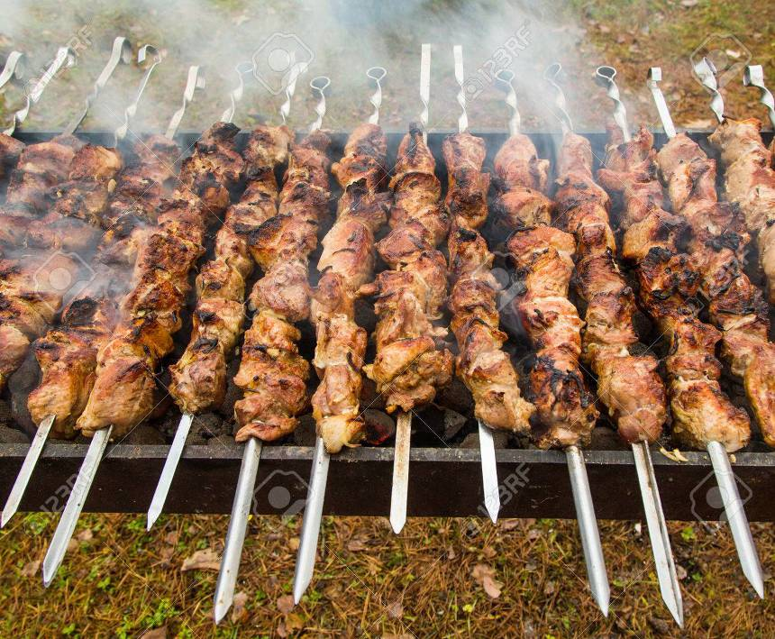
원래 적은 고기를 여럿이 나눠먹기 위해서는 주로 고기를 삶아 그 국물까지 먹어야 합니다. 일리아드 내에서 상품으로 주어지는 것들 중에는 큰 솥도 있는 것으로 보아 뭔가를 삶아먹는 요리도 분명히 했을 것 같기는 한데, 실제로 이렇게 병사들이 식사할 때 솥을 이용하는 국물 요리는 나오지 않습니다. 그러나 나오지 않는다고 당시 사람들이 그런 국물 요리를 전혀 먹지 않았다는 것은 아닐 것입니다. 또 빵이나 죽 등 곡물로 만든 음식에 대해서도 그다지 많은 묘사가 있지는 않습니다. 하지만 전장에서 아킬레스에게 살해될 위험에 놓인 트로이 측의 리카온이 아킬레스의 무릎을 붙잡고 살려달라고 애원하는 장면에서, '내가 포로로 잡힌 뒤 처음 빵을 쪼갠 곳이 바로 당신의 장막 안에서였다' 라고 호소하는 장면이 나옵니다. 즉, 식사를 하는 것을 '빵을 쪼갠다'라고 표현하는 것으로 보아, 당연히 당시 병사들의 주식은 곡물이었을 것으로 생각됩니다. 특이한 것은 일리아드나 오딧세이에서 고기를 구운 뒤 그 위에 보릿가루를 뿌려 먹는 장면이 자주 나온다는 것입니다. 현대인의 입맛으로는 이해가 잘 가지 않지만 별다른 양념이나 향신료가 없던 시절에는 그런 곡식가루도 고기 맛을 내는 조미료 같은 것으로 썼던 모양입니다.
호머의 일리아드나 오딧세이만을 읽은 분들께서는 고전적인 그리스 시대의 생활상이나 전쟁의 양상에 대해 매우 그릇된 인상을 받았을 것입니다. 그 점에 대해서는 헤로도투스의 역사 앞부분에서도 자세히 언급이 되어있을 정도입니다. 그러니까 헤로도투스 시대에서조차도, 일리아드를 읽으면서 '우리 조상들은 우리와는 정말 다르게 살았구나'라고 생각했던 것이지요. 사실 알고보면 헤로도투스 시대의 그리스인들은 호머에 나오는 아킬레스 등의 인물들의 직계 후손이라고 할 수는 없다고 하지요. 아무튼 여기서는 음식 부분에 대해서만 말하도록 하지요.
먼저, 그리스는 먹을 것 부분에 있어서는 그다지 풍요로운 동네가 아니었습니다. 애초부터 지형이 대규모의 밀 농사에 적합하지도 않았고, 바다에서 엄청난 어획량이 있었던 것도 아니었습니다. 흔히 그리스는 해안선이 길기 때문에 수산물이 적지는 않았지만, 사실 어획량이 그렇게 많은 편은 아니었습니다. "바다의 밀"로 알려졌던 중세의 북해산 청어에 비하면 무척 보잘 것 없는 양의 생선만을 얻을 수 있었지요. 그래서, 그나마 좀 넓은 평야지대이던 펠로폰네소스 반도 이외의 지역에서는 애초부터 식량을 자급자족하겠다는 생각을 포기하고, 주로 흑해연안의 비옥한 농업지대로부터의 수입 곡물에 의존하게 되었습니다.
이런저런 이유로 인해, 고대 그리스인들은 먹는 것이 신통치 않았는데, 주로 보리로 만든 마자(maza)라는 이름의, 부풀리지 않은 빵같은 것을 먹었습니다. 이는 빵만드는 방법이 아직 그리스에 전해지지 않았기 때문이 아니고, 빵을 만들기에 적합한 밀가루가 귀했기 때문이었습니다. 밀가루로 만든 이스트로 부풀린 흰빵은 축제 때나 특식으로 먹을 수 있을 정도였습니다. 그래서 마자는 대개 보리로 만들어야 했습니다.
정확하게 마자는 빵이라고 할 수는 없었습니다. 빵은 가루를 반죽하여 굽는 것인데, 마자는 반대로 보리가루를 불에 볶은 뒤 물로 반죽하여 뭉친 덩어리였거든요. 이건 조금 오래 놓아두면 딱딱하게 굳어 버렸기 때문에, 식사를 할 때는 이걸 포도주나 물 같은 것에 적셔서 거의 죽 비슷한 형태로 만들어 먹었습니다. 요즘으로 치면 우유를 부어 먹는 일종의 시리얼 같은 거라고 생각해도 괜찮을 것 같지요 ? 그러나 이 맛없는 보리빵 마자도 그리스인들은 고맙게 먹어야 했습니다. 맛은 없어도 배를 채울 수 있었거든요. 오죽했으면 페르시아 전쟁 때 플라타에아 전투에서 승리를 거둔 그리스인들이 페르시아군 진영에서 그들의 산해진미를 보고 이렇게 한탄했겠습니까 ?
'이런 욕심장이들을 봤나 ? 이런 산해진미를 먹는 놈들이 우리의 보리빵을 빼앗겠다고 쳐들어 오다니 !'
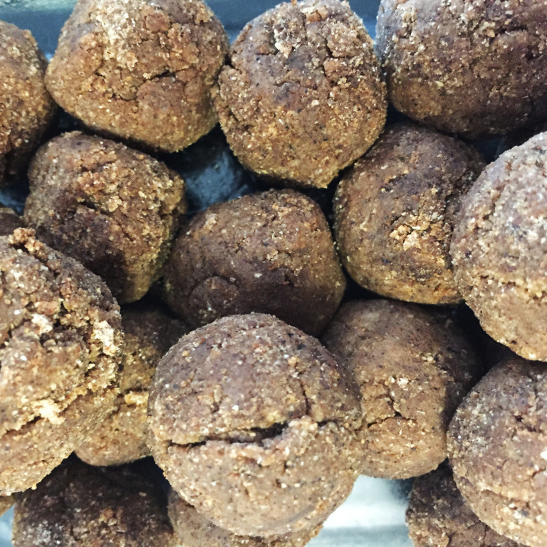
(보기만 해도 식욕이 뚝 떨어지는 보리빵 마자(maza)입니다.)
육류는 정말 부족한 편이었습니다. 육류라는 것은 정말 귀한 것으로, 일반 서민부터 부유층까지, 일상적으로 먹는 음식이 아니었고, 축제 때에나 한번 먹어볼까 하는 음식이었습니다. 전에 인기를 끌었던 시오노 나나미의 로마인 이야기를 보면, 갈리아 인들은 멧돼지 다리를 뜯는 동안 로마인들은 밀가루로 만든 빵과 죽을 선호했다고 씌여있었는데, 정확하게는 로마인들이 고기를 싫어했다기 보다는 없어서 먹을 수가 없었던 것이었습니다. 대신 생선 종류는 그래도 좀 나은 편으로, 일상적으로 소비가 되었던 것 같습니다. 고대 그리스어로 '맛있는 것, 고기'라고 하면 생선을 말할 정도였습니다. 이 전통은 로마시대까지 그대로 이어져서, 로마인들도 육류는 별로 맛보지 못했고, 생선류를 대신 즐겨 먹었습니다. 케사르가 갈리아 원정의 성공을 축하하며 로마 시민들에게 베푼 연회에서 제공된 음식도 주로 빵과 뱀장어 구이였다고 합니다.
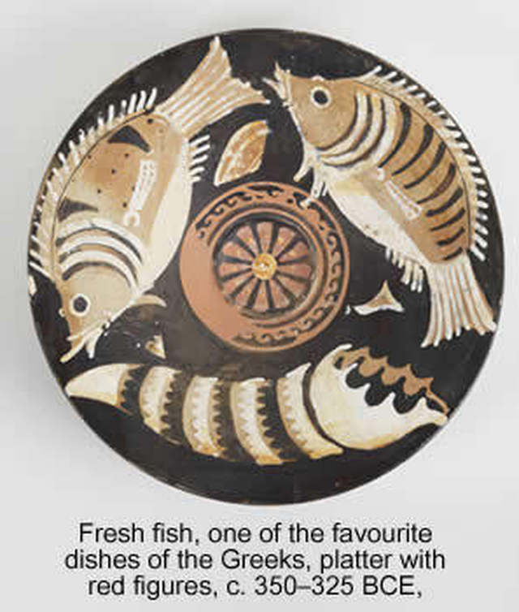
(사진 속의 설명대로 입니다. 식사 때마다 소와 양을 호쾌하게 잡아먹던 일리아드나 오딧세이의 식사 장면과는 달리, 실제 그리스인들에게 고기라는 것은 정말 맛보기 어려운 진미였고, 대개는 물고기로 만족해야 했습니다.)
어떤 사회이든 주어진 자연 환경에 적응하며 발전하게 됩니다. 그리스의 경우가 딱 그랬습니다. 그리스는 인구가 늘어나면서 좋든 싫든 무역을 해서 부족한 곡물을 해외에서 사들여야 했습니다. 그런데 그 곡물 값을 치를 만한 것이 뭔가 있어야 했습니다. 그리스는 위에서 언급한 것처럼 주민들이 쫄쫄 굶기에 딱 좋은 지형이었지만 그래도 잘 되는 농사가 있었습니다. 바로 올리브와 포도였습니다. 잘 말리면 오랜 기간 보존이 가능한 보리와는 달리 올리브와 포도는 보리보다 맛은 있을지 몰라도 즙이 많고 물러서 장기 보존이 곤란했습니다. 게다가 아무리 많다고 해도 이것들로 배를 채울 수는 없었습니다. 하지만 필요는 발명의 어머니라고, 그리스인들은 올리브에서 기름을 짜내고 포도즙을 발효시켜 포도주를 만들어 수출 상품으로 가공했습니다. 이런 올리브 기름과 포도주 항아리를 실은 무역선이 부지런히 흑해 연안 지대와 시케리아(지금의 시칠리아), 이집트 등을 오가며 소중한 곡물을 수입해왔습니다. 특히 이미 꽤 많은 그리스 식민지가 형성되어 있던 흑해 북쪽 해안지대는 (지금도 우크라이나의 비옥한 농토는 유명합니다만) 지중해 세계의 대표적인 곡창지대로서, 이곳과 교역하기 위해 꼭 통과해야 하는 헬레스폰트 해협(지금의 다다넬스 해협)은 전체 그리스 도시국가들, 특히 아테네의 밥줄을 쥔 지역으로서 이 지역의 패권을 둘러싸고 많은 전쟁이 벌어질 운명이었습니다. 현대의 원유 수송로인 호르무즈 해협 못지 않은 전략적 중요성을 가진 곳이었지요.
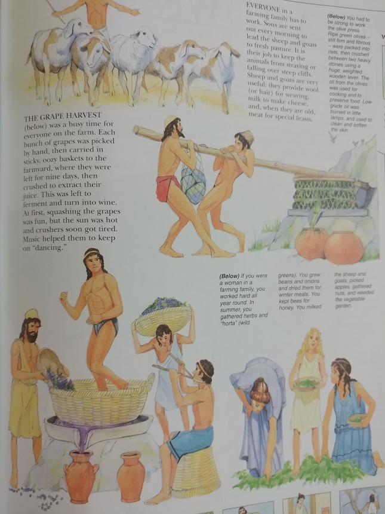
(고대 그리스 사람들의 주요 경제 활동인 올리브 착유와 포도주 만드는 작업입니다. 'How to survive' 시리즈 그림책을 찍은 거에요.)
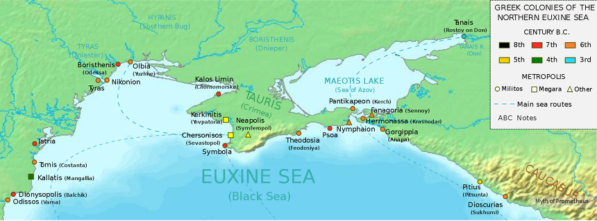
(오늘날 우크라이나 땅인... 아, 우크라이나 땅이라고 하면 안되겠구나... 흑해 연안의 그리스 식민도시들입니다. 일찍부터 그리스인들은 먹고 살기 어려운 그리스 본토를 벗어나 지중해 곳곳에 식민도시를 세웠습니다. 그러나 주변 원주민들을 정복했다든가 하는 것과는 거리가 멀었고, 대개 주변 원주민들의 눈치를 보면서 살았습니다.)
지금처럼 비료나 농기계가 없던 시절, 당연히 곡물 생산량은 적었고 가격은 비쌌습니다. 더군다나 증기기관은 커녕 갈레온선도 없던 시절 먼 흑해에서 실어오는 곡물은 더욱 비쌌습니다. 그로 인해 그리스, 특히 아테네에서는 곡물 가격의 안정을 위해 많은 규제를 두었습니다. 아테네와 그 주변 지역에서는 곡물 수출이 절대 금지되었습니다. 또 절대 다량의 곡물이 수입품이니만큼 일부 곡물만 사재기를 하거나 입항을 지연시키기만 해도 큰 돈을 벌 수 있었습니다. 상인들에게는 그게 자유시장경제에 따라 아테네에 부를 가져올 '투자'일 수 있었지만 아테네 민회에서는 그렇게 생각하지 않았습니다. 곡물은 국가가 사들여 공공 곡물 창고에 보관했으며, 또 한번에 한 사람이 살 수 있는 곡물은 '50명이 나를 수 있는 분량'으로 엄격하게 제한되었고, 이를 어기는 사람은 사형에 처했습니다. 또 이렇게 사들인 곡물을 사적으로 거래하는 것도 엄격하게 제한하여, 어느 누구라도 곡물을 매입한 가격보다 1오볼 이상의 차익을 남기고 되팔수 없도록 했습니다. 당시 가난하고 재주없는 사람들이나 하던 3단 노선의 노젓는 사람이 받는 하루 일당이 2오볼이었습니다. 한마디로 어느 누구도 곡물 거래로 큰 돈을 벌 수 없게 만들겠다는 '곡물 공개념' 제도를 가지고 있었던 것이지요. 아마 이런 규제가 없었다면 아테네의 많은 시민들을 먹여 살릴 수 없었을 것이고, 아테네는 지중해의 패권은 커녕 생존조차 하지 못했을 것입니다.
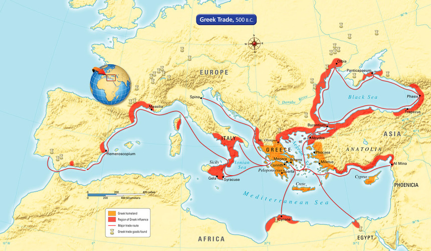
(고대 그리스의 주요 교역로입니다. 특히 우크라이나의 비옥한 흑토는 그때도 유명했는지, 흑해 북부 해안에서 나는 곡물이 그리스를 먹여 살렸습니다.)
특이할 만한 점으로, 그리스인들은 포도주에 항상 물을 타서 마셨습니다. 이렇게 포도주에 물을 타마시는 풍습은 특이한 것은 아니고, 중세에도 이렇게 물을 탄 포도주를 많이 마셨습니다. 심지어 나폴레옹도 샹베르텡 와인에 물을 타서 마셨거든요. 물과 포도주의 비율은 사람마다 틀렸지만 그리스 당시엔 대략 50:50의 비율이었습니다. 어떤 프랑스 학자는 그리스의 포도주는 진득진득할 정도로 진했기 때문에 물로 희석시켜 마셨다고 하지만, 그건 프랑스인들의 포도주에 대한 집착을 합리화하기 위한 이야기같고, 실제로는 아껴 마시기 위한 것이었습니다. 손님을 초대하여 식사를 제공할 때, 포도주에 물을 얼마나 탈 것인가는 손님 취향에 따라 각자 정하는 것이 아니라 주인이 정했습니다. 그때 포도주에 물을 너무 많이 타면, 손님들은 주인이 너무 인색하다고 비웃곤 했습니다. 또 그리스인들이 물로 희석한 포도주를 마시는 이유 중 하나는 취하지 않기 위함이었습니다. 한국인들은 흔히 술을 취하려고 마신다고 하지만, 원래 술에 취하는 것은 매우 볼썽 사나운 일이고 절대 남에게 보여서는 안 되는 추태입니다. 고대 그리스에는 홍차나 커피, 코카콜라 등 다른 음료가 없었으니 포도주를 자주 마실 수 밖에 없었는데, 그때마다 포도주 원액 100%를 그대로 마시면 취하는 것도 피할 수 없고 또 건강에도 해로왔습니다. 실제로 스파르타의 어떤 왕은 스키티아인들과 교류하다가 포도주를 물로 희석하지 않고 그대로 마시는 풍습을 배워 그렇게 포도주 원액을 그대로 마시곤 했는데, 결국 미쳐버렸다고 합니다.
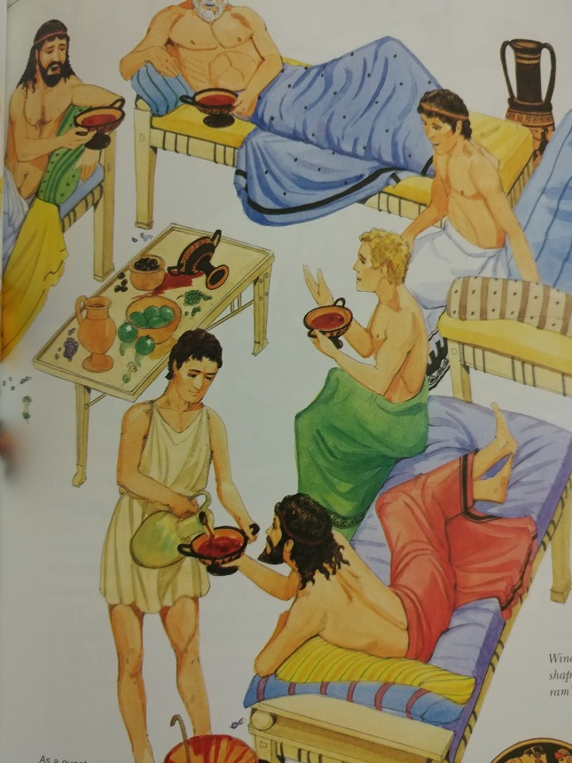
(그리스인들의 향연은 저렇게 모두 비스듬히 누워서 노예들이 따라주는 와인을 마시며 주로 수다를 떠는 형식이었습니다. 그리스식 향연을 συμπόσιον라고 하는데, 이는 '함께 마신다'라는 뜻으로서 현대 영어에서는 심포지움(symposium)이라고 합니다.)
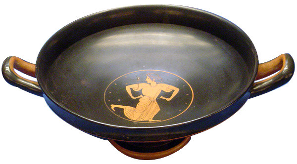
(저 손가락에 걸고 돌리고 있는 듯한 접시는 kylix라고 하는데, 납작하고 양쪽에 손잡이가 달려 있습니다. 포도주를 마신 뒤, 저 손잡이에 손가락을 넣고 빙빙 돌리다가 그 원심력을 이용하여 잔에 약간 남은 포도주 방울을 뿌려 목표물을 맞추는 것이 향연에서의 흔한 게임이었다고 합니다.)
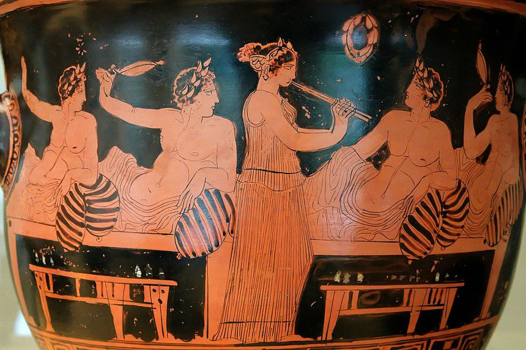
(그리스 항아리에 그려진 그리스인들의 향연 모습입니다. 손님들이 손가락에 납작한 술잔 kylix의 손잡이를 걸고 빙빙 돌리는 모습을 보실 수 있습니다.)
그렇다면 구체적으로 병사들은 무엇을 먹고 마셨을까요 ? 가장 구체적인 묘사는 크세노폰의 페르시아 원정기(Anabasis)에 나옵니다. 아나바시스는 1만 명에 달하는 그리스 용병들이 페르시아 키루스 왕자에게 고용되어 키루스의 형이자 페르시아의 왕인 아르타크세륵세스에 대한 반란에 참전했다 쿠낙사(Cunaxa) 전투에서 패배한 뒤 오늘날 이라크 중심부에서 흑해 연안으로 탈출하는 이야기입니다. 이들이 어렵게 어렵게 그리스 접경 지역까지 왔을 때, 당장 먹을 식량이 부족해졌습니다. 여태까지는 어차피 적대 지역이랍시고 약탈로 먹을 것을 구하며 뚫고 왔는데, 이제 페르시아 제국을 빠져 나오니 예전처럼 마구 약탈을 할 수가 없었기 때문이었습니다. 이때, 용병 중의 한 명이 스스로를 뛰어난 전술가로서 장군의 능력을 갖추고 있다고 설명하며, 전체 용병단에 대한 지휘권을 달라고 요청했습니다. 그러자 병사들은 당장 먹을 것을 마련해준다면 그렇게 하겠다고 대답합니다. 그러자 이 '지휘관 취준생'은 정말 먹을 것을 구해오겠다며 어디론가 사라졌다가 식량을 어깨에 짊어진 짐꾼들을 데리고 돌아옵니다. 그때 이 '지휘관 취준생'이 마련해온 식량의 목록은 다음과 같습니다.
'스무명이 보리가루를, 스무명이 포도주를, 세명이 올리브를, 한명은 마늘, 나머지 한명은 양파를 각기 들 수 있는 만큼씩 들고 왔다'
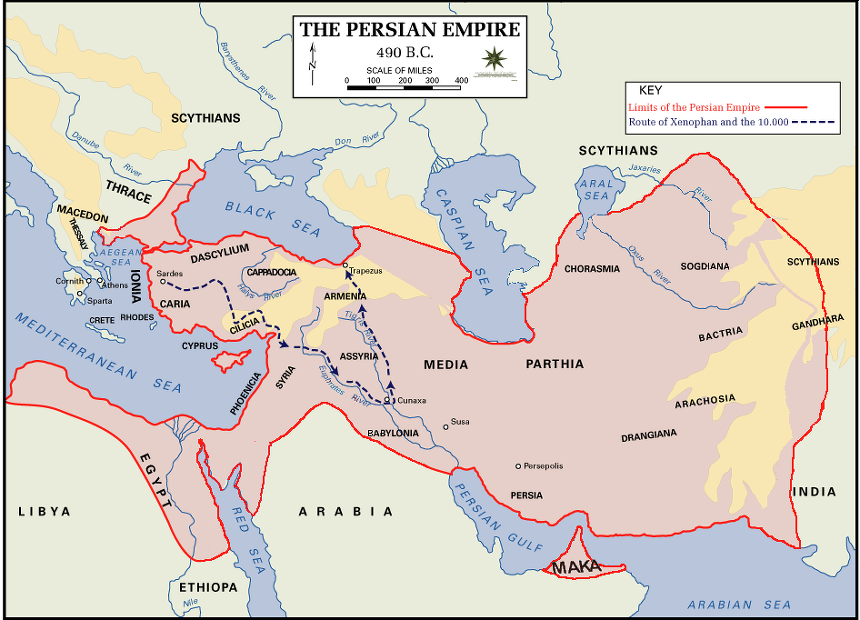
(흔히 키루스의 1만명이라고 불리던 그리스인 용병단의 진격 및 후퇴로입니다. 이들이 도착한 흑해 연안의 그리스 식민도시 트라페주스(Trepezus)는 오늘날의 터키 트라브존(Trabzon)으로서, 유럽 챔피언스 리그에 가끔 등장하는 터키 축구 클럽 트라브존스(Trabzonspor)의 홈 도시입니다.)
뭔가 상당히 빈약한 느낌이 들지 않습니까 ? 이 '지휘관 취준생'이 가지고 온 식량은 약 8~9천에 달했던 이 용병단 병사들에게는 1일치 식량도 되지 못했기 때문에, 결국 지휘관 취업에 성공하지 못했다고 합니다. 여기서 주목할 부분은 그 양이 아니고, 목록입니다. 이 병사들은 행군 중에 빵을 구울 화덕을 만들지도 못했을 것이므로, 이 보리가루로 마자(maza)라는 부풀리지 않은 빵을 만들어 먹었을 것입니다. 그리고 양념으로 올리브와 마늘과 양파를 넣었겠지요. 현대적인 식단에서 보자면 채소가 많이 부족하다는 것을 금방 느낄 것입니다. 실제로, 그리스 사람들 뿐만 아니라, 유럽에서는 19세기까지도 채소는 별로 먹지 않았답니다. 채소는 어쩔 수 없이 먹어야만 하는 가난한 사람들만 먹었으며, 여유가 있는 사람들은 채소를 싫어했고 건강에도 나쁘다고 생각했으며 그래서 별로 많이 재배하지도 않았습니다. 주로 지방과 전분 위주의 식사를 했던 것입니다. 로마군의 식량 목록을 보더라도, 주로 밀과 콩, 포도주, 그리고 양념으로 양파와 식초 이야기만 나오고, 채소 이야기는 전혀 나오지 않습니다. 이는 나폴레옹 시대는 물론 제1차 세계대전 때까지도 그대로 이어져 병사들은 신선한 채소를 거의 보급받지 못했습니다. 신선한 채소는 병사들이 알아서 '구해서' 먹는 것이지 군대에서 보급하는 것이 아니었지요.
투키디데스가 쓴 펠로폰네소스 전쟁사에는 당시 병사들의 특별한 식단이 나옵니다. 일종의 해군용 전투 식량이지요. 여기에는 사연이 있습니다. 아테네가 주도하는 델로스 동맹에서 이탈하려는 미틸레네(Mytilene) 시를 아테네 함대가 무력으로 점령한 뒤, 그 함대 지휘관은 아테네에 미틸레네 시민들에 대해 어떤 처분을 내릴 것인지 묻기 위해 전령선으로 삼단노선(trireme) 한척을 보냅니다. 이 전문을 받은 아테네에서는 민주주의 국가답게 민회에서 미틸레네 주민들의 우명을 결정했는데, 비정한 아테네 시민들은 미틸레네의 남자 시민들을 모조리 처형해버리고 여자와 아이들은 노예로 팔아버리라는 명령을 가결한 뒤 현장으로 전령선을 돌려 보냅니다. 그러나 바로 직후, 그건 너무 심한 결정이었다는 후회가 뒤늦게나마 몰려온 시민들은, 다시 민회를 열어 앞서 내린 명령을 취소한다는 전령선을 새로 보내기로 합니다. 이 두번째 전령선이 도착이 늦으면 미틸레네 시민들은 모조리 몰살당할 위기에 처한 것입니다. 아테네 민회에서는 이 뒤쫓아가는 두번째 전령선에게 특별 보너스까지 걸고 쾌속으로 항해할 것을 당부했습니다.
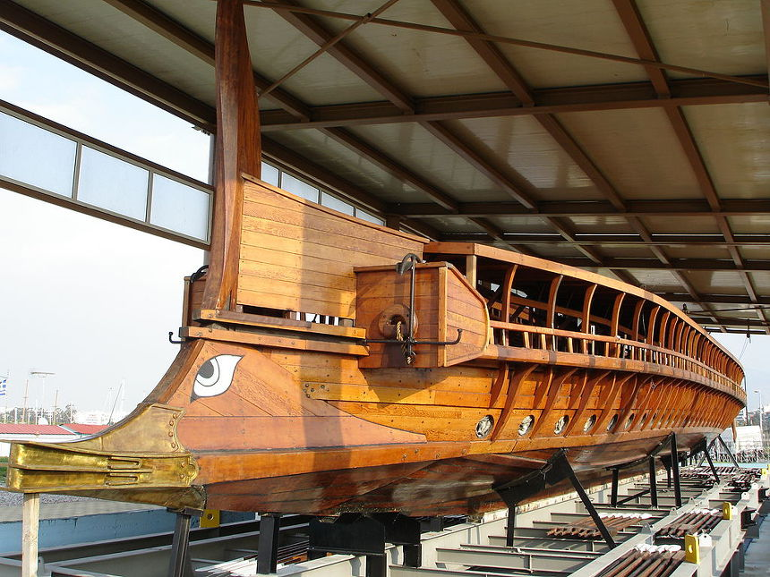
레스보스 섬에 위치한 미틸레네 시와 아테네와의 거리는 345km로서, 아무리 열심히 노를 저어도 최소 48시간 이상 걸리는 거리였습니다. 당시 그리스의 삼단노선은 좁고 가벼운 선체에 노수까지 포함하여 너무 많은 사람이 타는 구조라서 24시간 항해는 불가능했습니다. 그래서 하루에 두어번씩 반드시 근처 해안가에 배를 끌어올려놓고 모닥불을 피워 밥도 지어 먹고 잠도 잤지요. 그래서 항상 해안가에 붙어서 항해했으며 먼 바다로는 어지간해서는 나가지 않았습니다. 그러나 미텔레네로 향한 두번째 삼단노선은 비상 상황에 따라 식사 시간은 물론 밤에도 배를 해안에 대지 않고 교대로 노를 저었습니다. 또 첫번째 삼단노선의 선원들도 자신들이 들고 가는 잔인한 명령서가 꺼림직하여 별로 열성적인 항해를 하지 않았기 때문에, 다행히 사형 집행이 이루어지기 전에 두번째 삼단노선이 미틸레네에 도착했고, 미틸레네는 몰살의 참극을 피할 수 있었습니다. 이때 잠은 그렇다치고, 두번째 삼단노선의 선원들은 어떤 식사를 했을까요 ? 이때 선원들은 배 위에서 보리가루와 올리브유, 포도주를 반죽한 것을 먹으며 노를 저었다고 합니다. 일종의 미숫가루 또는 생식이라고 할 수 있지요 ? 수천 명의 사람 목숨을 구한 매우 거룩한 식단이라고 할 수 있습니다.
Source :
Iliad by Homeros (Penguin books)
Anabasis by Xenophon (Penguin books)
How would you survive as an ancient Greek ?
빵의 역사 (하인리히 야콥, 우물이 있는 집)
먹거리의 역사 (마귈론 투생-사마, 까치글방)
https://passtheflamingo.com/2017/05/24/ancient-recipe-maza-ancient-greek-ca-2nd-millennium-bce/
https://en.wikipedia.org/wiki/Olbia_(archaeological_site)
http://gluedideas.com/content-collection/cyclopedia-of-knowledge/Ancient-Corn-Trade.html
https://en.wikipedia.org/wiki/Kylix
https://onlinelibrary.wiley.com/doi/full/10.1111/1095-9270.12144